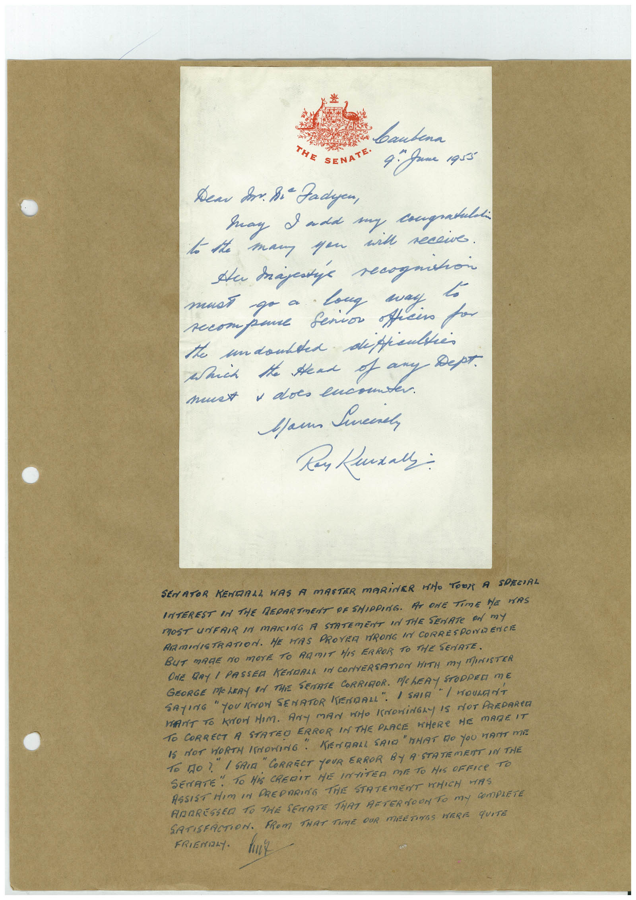

Book 1 · scan 125


Description
Transcription
Context
Review notes
Compare the machine draft with the scan. Handwriting and names need human review.
Artifacts
Edit the artifacts field in this note’s frontmatter to change these records. This summary is generated.
B01-S125-A01 — Letter & Handwritten note — Book 1, scan 125
Types: Letter, Handwritten note
Scope: Whole scanned page; individual items can be split out during review.
Caption: Not mapped yet.
Caption source: Not recorded yet.
Caption status: unmapped
Machine transcription
bautena THE SENATE• 4. game agra Дем So. Bi Padyen, Say I add my congratuld to the many you with recewe. must go a Long say. compane Senior officio for the undoubted difficulties Which the send of any Дерт. must , does lucou Mau Sneere SENATOR KENDALL WAS A MASTER MARINER WHO TOOT A SPECIAL INTEREST IN THE MEDARTMENT DE SHIPPING. AT ONE TIME HE MAS MOST UNFAIR IN MAKING A STATEmENT IN THE SEnATe An mY RAMINISTRATION. HE HAS PROYER RONG IN CORRESPONDENCE BUT MAGE NO MOrE TO ARMIT HIS ERROR TO THE SENATE. ONE DRY I PASSED KENDALL IN CONVERSATION HITH MY MARISTER GEORGE MOLERY EN THE SENATE CORRIOR. MCLERY STOPPED ME SAYING " YOU KNOW SENATOR KENDALL". 1 SAIG "I WOULANT WANT TO KON HIM. ANY MAN WHO KNOWiNGLY IS NOT PREDARED TO CORRECT A STATEO ERROR IN THE PLACE WHERE HE MARE IT IS NOT HORTH (SNORING" KENDRLL SAIG"HHAT DO YOU WANT MI To DO? " I SAIA " CORRECT YOUR ERROR BY A STATEMENT IN THE SENATE • " TO HiS CREDIT HE INTiTER ME TO HIS OFFICe TO ASSIST HIM IN PREPARING THE STATEMENT WHICH WAS ANARESSED TO THE SENATE THAT AFTERNOON TO MY COmPLETE SATISFACTION. FROM THAT TIME OUR MEETINGS WERE qUITE FRIENDLY.